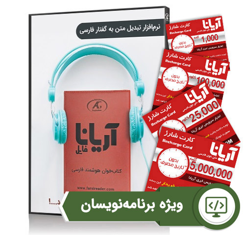
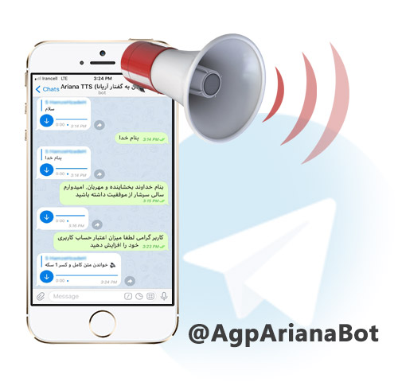

نرمافزار متن خوان آریاناسرویس (Offline Service)ماژول آریانا، نسخه اختصاصی نوشتار به گفتار فارسی آریانا است که جهت استفاده برنامهنویسان و شرکتهای ارائهدهنده سرویسهای اطلاعرسانی مانند تلفنهای گویا، سایتهای خبری و تولیدکنندگان کتابهای الکترونیکی تولید شده است. این محصول به صورت سرویس دهنده REST API ارائه میگردد. با استفاده از API متن خوان آریانا روی یک سرور ویندوز، شما میتوانید متنهای متفاوت را به آریانا فرستاده و به سرعت فایل صوتی را دریافت کرده و آن را ذخیره یا پخش کنید. |
اطلاعات بیشتر |
محصولات متن به گفتار آریانا
ماژول متن به گفتار آریانا (SDK)سرویس و کتابخانه متن به گفتار آریانا (SDK)، این امکان را به توسعهدهندگان سیستمها و برنامهنویسان میدهد تا به سادگی، قابلیت تبدیل متن فارسی به صوت طبیعی را به سامانههای خود اضافه نمایند. کتابخانه متن به صوت آریانا به صورت DLL داتنت ارائه شده که در پروژه های نرمافزاری دات نت میتوان از آن استفاده نمود. |
اطلاعات بیشتر |
|  |
متن به گفتار اعتباری آریانابرای بهره بردن از امکانات کامل و نامحدود نرمافزار مبدل متن به صدا علاوه بر خرید نرمافزار آریانا، این امکان برای مشتریان فراهم شده است تا با عضویت در سایت عصر گویش پرداز از اعتبار رایگان اولیه برای تبدیل متن به فایل صوتی آریانا استفاده نمایند. همچنین امکان خرید اعتبار به صورت بستههای اعتباری نیز فراهم میباشد. |
اطلاعات بیشتر |
|
بستههای اعتباری سرویس نوشتار به گفتار آریانا مخصوص برنامهنویسان و توسعهدهندگان نرمافزارها و وبسایتها میباشد. برای اطلاعات بیشتر درباره نحوه اتصال به بخش راهنمای اتصال مراجعه نمایید. برای استفاده از بستههای اعتباری آریانا، با کلیک بر روی بسته مورد نظر وارد وبسایت شرکت عصر گویش پرداز میشوید و در صورت نیاز همزمان با پرداخت، برای شما حساب کاربری نیز ایجاد میگردد. سپس شما میتوانید کلید اتصال (API KEY) و میزان اعتبار را در سرویس ابری آریانا مشاهده نمایید. همچنین شما میتوانید برنامه کلاینت ابری را دانلود نموده و با وارد کردن کلید اتصال (API KEY)، از شارژ خود برای تبدیل کردن متون به فایل صوتی استفاده کنید. دریافت نرمافزار کلاینت ابری آریانا |
||
 |
نرمافزار کتاب خوان آریانافایلکتابخوان آریانافایل (نوشتار به گفتار)، بهترین نرمافزار تبدیل متن به صدا یا سنتز گفتار در زبان فارسی است که قادر است نوشتار فارسی را به فایل صوتی تبدیل کرده و به صورت طبیعی بخواند. آریانا هر نوع نوشتهای را برای فرد میخواند از جمله فایلها، کتابهای الکترونیکی، سایتهای خبری، نامههای الکترونیکی. همه افراد میتوانند از مبدل متن به صوت آریانا برای شنیدن متون و اسناد الکترونیکی خود استفاده نمایند. آریانا دارای امکانات متعددی از جمله انتخاب گوینده، تغییر سرعت و تن صدا و توانایی خواندن علائم نگارشی و تاریخ میباشد. |
اطلاعات بیشتر |
 |
پلاگین تبدیل متن به گفتار در وردپرسافزونه متنخوان فارسی آریانا در حال حاضر تنها افزونه تبدیل متن به گفتار طبیعی برای زبان فارسی است که قادر است همه متون صفحات وبسایت رو با صدای کاملا طبیعی و روان بخواند. این پلاگین به طراح امکان قراردادن لینک خواندن متن برای هر پاراگراف و یا متن را بهصورت جداگانه داده و کاربران فقط با کلیک بر روی دکمه پخش، به جای خواندن و نگاه کردن به صفحه نمایش، به صدای طبیعی تولیدشده در سایت گوش میدهند که این امکان کمک زیادی به صرفهجویی زمان افراد و در نتیجه ماندگاری در سایت میشود. |
اطلاعات بیشتر خرید پلاگین |
متنخوان آریانا با صدای اختصاصیتغییرات صدای انسان در طول زمان با توجه به تغییرات سن و بیماری، امری طبیعی است. حفظ و ماندگار کردن این صدا از آرزوهای دیرینه بشر بوده است. شرکت عصر گویش پرداز این آرزو را محقق کرده و افراد می توانند با اختصاصی کردن نرم افزار تبدیل متن به گفتار آریانا صدای خود را جاودانه نمایند. زین پس فقط کافیست متن مورد نیاز نوشته شود و سامانه اختصاصی آریانا آن را با صدای خود فرد بخواند. |
اطلاعات بیشتر |
 |
نرمافزار اندروید تماسگو و متن به گفتار آریانابا کمک نوشتار به گفتار آریانا میتوانید هر نوع متن فارسی را در گوشی اندروید به صورت آنلاین به صدای طبیعی تبدیل کنید. علاوه بر این مبدل متن به صوت آریانا قادر است پیامکهای شما را به محض دریافت بخواند. از امکانات این نرمافزار میتوان به سرویس تماسخوان، سرویس پیامکخوان صوتی، ویجت پیامکخوان صوتی و سرویس کلیپبورد اشاره نمود. |
دریافت مستقیم دریافت از کافه بازار |
|  |
ربات تلگرام متن به گفتار آریاناکاربران توسط ربات تلگرام متن به گفتار آریانا میتوانند به سادگی هرچه تمام تر متون مورد نظر خود را به گفتار فارسی تبدیل نمایند و فایل صوتی آن را دریافت نمایند. طریقه کار ربات به این شکل است که ربات در ابتدا متن را دریافت کرده، آن را پردازش میکند، سپس با پردازش ویژگیها و ایجاد صدایی شبیه به صدای انسان (نوع و جنسیت صدای قابل انتخاب توسط کاربر) آن را برای کاربر ارسال می کند. |
مشاهده ربات |
درباره ما
عصر گویش پرداز فعالترین شرکت ایرانی در زمینه هوش مصنوعی و پردازش صدا است که از سال ۱۳۸۲ با پشتوانه فنی متخصصان دانشگاه صنعتی شریف، مشغول فعالیت بوده است. محصولات و خدمات ارائه شده توسط این شرکت به صورت تخصصی در زمینههای تبدیل متن به گفتار، تایپ گفتاری، جستجو در صوت، پردازش تصویر و پردازش زبان طبیعی است.